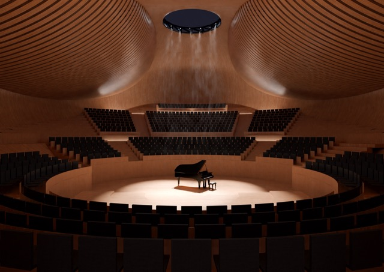
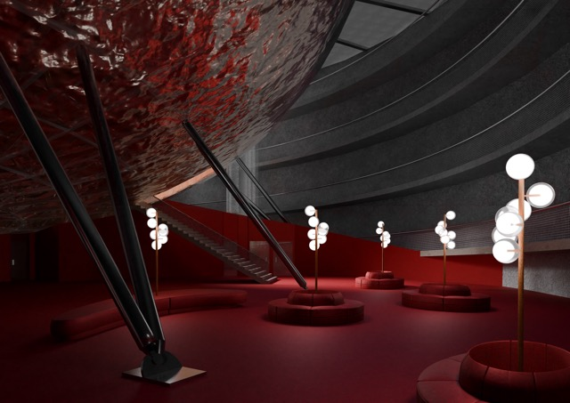
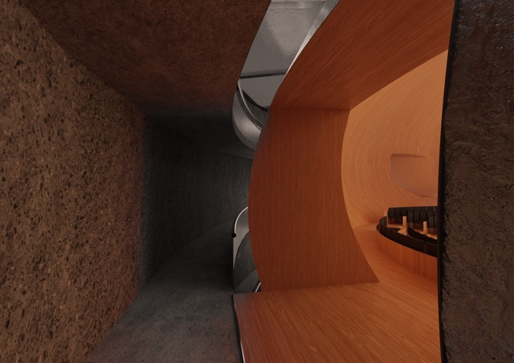
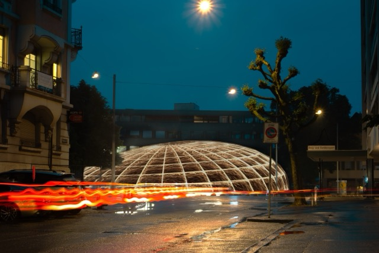
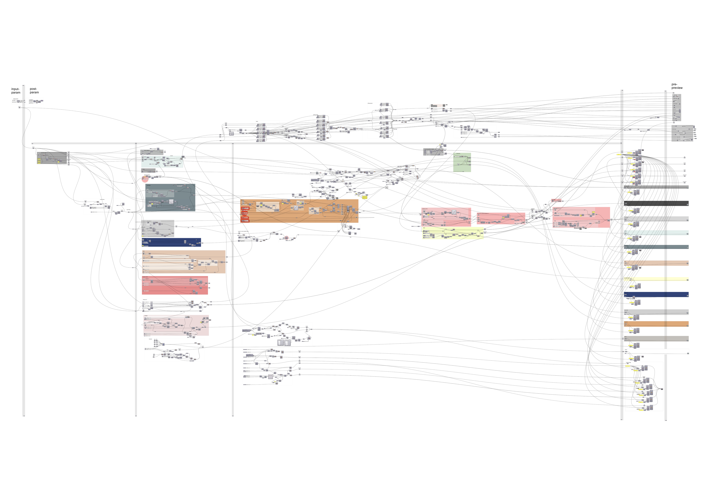

LOCATION
Dornacherplatz is situated at the edge of Solothurn’s old town, directly beside the Aare River and in close proximity to the main train station. For many years, this central square functioned as a surface parking lot. To free up space above ground, parking was relocated to a new underground garage positioned 16 meters below the surface.
CONSTRUCTION
The construction of the underground garage involved several key steps. First, a thick slurry wall was installed around the excavation site to absorb all horizontal forces from the surrounding soil and water, creating a dry, watertight “bucket” in which construction could proceed from the bottom up. As a result, the internal structure—such as the ramp—remained structurally independent from the exterior retaining walls.
NEEDS
Today, Dornacherplatz remains largely unused and covered with asphalt. Solothurn identifies as a city of culture and actively supports cultural initiatives. While there is sufficient affordable housing—with new developments underway—the Solothurn Symphony Orchestra currently lacks a dedicated rehearsal and concert venue within the city.
FEASIBILITY
After conducting in-depth acoustical research and comparing the sizes of various concert halls, it became clear that the dimensions of the existing underground parking structure are sufficient to accommodate a concert hall.
PROJECT
The project proposes converting the existing underground parking facility into a concert hall. The first step would be to return the site to its original “bucket” state by removing all internal structures and ramps, leaving only the sealed, empty underground volume.
Once cleared, a new concert hall can be constructed from the bottom up within this watertight shell. The concert hall is designed as a free-standing structure, independent from the outer retaining walls, to minimize vibration and ensure optimal sound isolation.
The interior features a shifted vineyard-style seating arrangement, bringing the audience closer to the performers, while acoustic extensions help distribute sound evenly throughout the space. The negative space created between the compact elliptical form of the concert hall and the outer retaining wall generates a series of unique spatial sequences.
Named “The Note” for its elliptical form set diagonally within the site, the concert hall is divided into two nearly equal zones—one for the audience and one for the musicians. A helical ramp spirals down through both zones, allowing visitors and musicians to experience the full journey through the building. Throughout this descent, the audience and musicians remain separated, with their only visual meeting point at the stage—creating a sense of anticipation and dynamic interplay until they finally come together for the performance in “The Note.”




